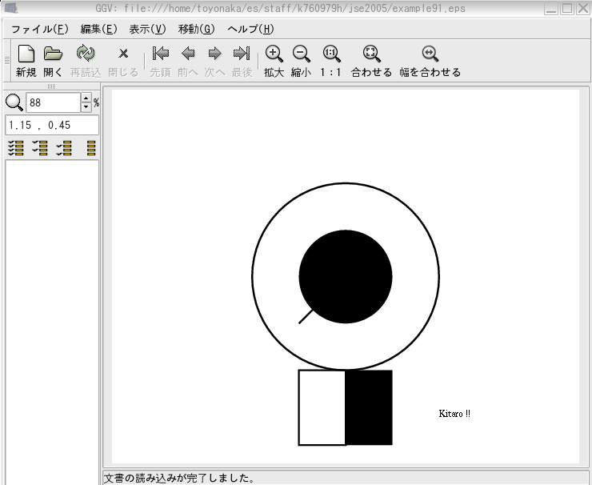

描いた絵をファイルに保存したもの（イメージファイル） を表示する方法について説明しましょう．
example9_1を実行すると，example91.epsというイメージファイルが作られ ます．
ggv example91.eps
を実行すると，ggv というプログラムが，ファイルに保存された図を表示して
くれます．
ggv から印刷もできます．
しかし，作成したイメージファイルを印刷する場合，
紙面からはみ出す場合もありますので印刷前に必ず preview
で印刷範囲を確認してください．
画像がはみ出るような場合には，handy graphicの描画範囲を
調整してください．